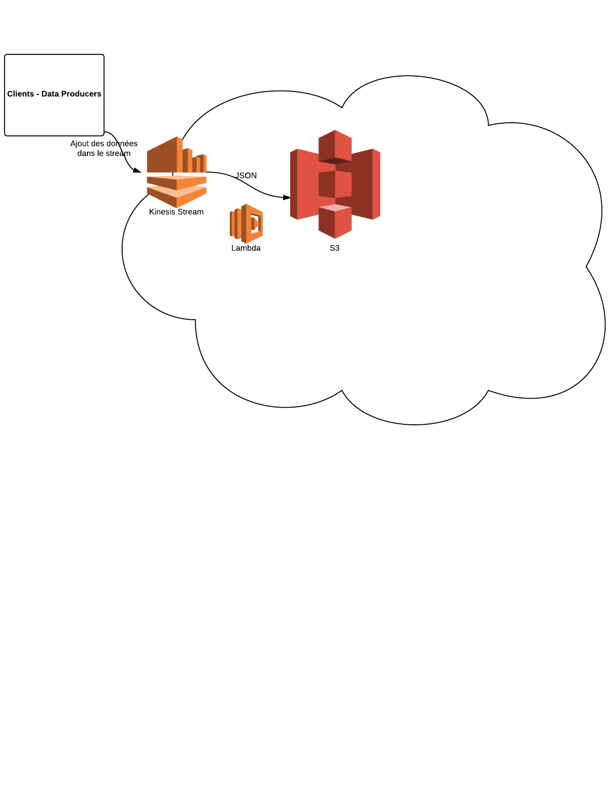

DataHug
Le stack Big Data selon Davidson
Davidson Consulting
Sommaire
- Overview
- Contexte de DataHug
- La puissance de l'information
- Notre solution : DataHug
- Spécifications techniques
- Leviers d'utilisation
- Services utilisés
- Architecture complète
- Contexte de DataHug
- La puissance de l'information
- Notre solution : DataHug
- Leviers d'utilisation
- Services utilisés
- Architecture complète
Contexte de DataHug
Contexte de DataHug
- De plus en plus de données
- Des données de types, formats et origines différents
- De plus en plus compliqué de gérer cette donnée (stockage, analyse, temps réel)
- Big Data peut être difficile et coûteux à appréhender
La puissance de l'information
La puissance de l'information
- La donnée : Votre richesse
- L'analyse de cette donnée : un métier à part entière => DataScientist
- Le résultat de l'analyse : Votre valeur ajoutée future
- Fournir la puissance et les outils pour l'analyse : encore un autre métier => Le nôtre
DataHug Overview
Overview
Overview
Overview
Overview
Overview
Overview
Overview Connecteur
Connecteur
- Interface entre vos données et nos outils d'analyse
- Différents connecteurs déjà développés
- API Rest (Envoi des données via HTTP/S)
- Kinesis Streams (Nécessite un ajout de code dans l'application cliente)
- Utilisation de Hubs IoT comme HiveMQ ou RunAbove TimeSeries
Overview Analyse
Analyse
- Utilisation d'Amazon Web Services
- Big Data grâce au framework Hadoop
- Possibilité de faire de l'analyse en temps réel
- Possibilité de générer des rapports
- Infrastructure très scalable (en augmentation ou descente de charge)
- APIs permettant l'exposition des données de manière sécurisée
Overview Visualisation
Visualisation
- Nombreux types de repésentations
- Simplicité de visualisation des informations
- Adaptable à divers secteurs d'activité
- Utilisation de bibliothèques JavaScript


POC Dashboard client
POC Dashboard client

POC Dashboard client
POC Dashboard client
POC Dashboard client
POC Dashboard client
POC Dashboard client
Spécifications Techniques
Spécifications Techniques
- Rappel des besoins
- Leviers d'utilisation
- AWS Management Console
- AWS CLI
- SDKs
- Services utilisés
- Kinesis Streams
- Simple Storage Service - S3
- DynamoDB
- Lambda
- API Gateway
- Elastic Cloud Computing - EC2
- Elastic Map Reduce - EMR
- Redshift
- Architecture complète
- AWS Management Console
- AWS CLI
- SDKs
- Kinesis Streams
- Simple Storage Service - S3
- DynamoDB
- Lambda
- API Gateway
- Elastic Cloud Computing - EC2
- Elastic Map Reduce - EMR
- Redshift
Rappel des besoins
Rappel des besoins
- Absorber grosses quantités de données
- Temps Réel en entrée et sortie
- Haute disponibilité (consultable H24, 7J/7)
- Génération de rapports
- Présentation de métriques (Dashboard)
- Prix abordable (Pour attirer aussi les Startups et PME)
- Machine Learning / Business Intelligence à terme
Moyens d'utilisation
AWS Management Console
AWS Management Console
- User friendly
- De nombreux tutos utilisent cette interface
- Nombreux indicateurs
- Pas très pratique pour scripter
- C'est pour les casus
AWS CLI
AWS CLI
- Notation :
-
aws dynamodb scan --table-name Sensor -
aws SERVICE COMMANDE [--KEY VALUE] - Possibilité de redéfinir les confs à la volée, et de changer le type d'output
- Nombreux services utilisables
- Rend le scripting plus simple que simuler des clicks sur une interface :)
- Basée sur le SDK Python
- Seuls les vrais savent.
AWS SDKs
SDKs
- Android
- Browser - Javascript
- iOS
- Java
- .NET
- Node.js
- PHP
- Python
- Ruby
- Go
- C++
Kinesis Streams
Utilité : Streaming de données à une échelle massive pour un traitement temps réel.
Concept : Sorte de pipeline dans laquelle de la donnée est envoyée, et devient accessible par les autres services AWS
Place dans l'archi : Récupération des données et distribution de celle-ci aux autres services AWS, avec l'aide de Firehose ou Lambda.
Lexique Kinesis Streams
- Stream: séquence ordonnée de data records. Chaque enregistrement dans le stream possède un numéro de séquence.
- Data record: L'unité de donnée stockée dans Stream. Composé d'un numéro de séquence, d'une clé de partition et d'un data blob. Le blob peut aller jusqu'à 1Mb. Streams ne touche ni ne modifie le blob.
- Période de rétention: Durée durant laquelle la donnée sera accessible via Streams. Par défaut 24h, augmentable jusqu'à 7j, mais augmente aussi le prix.
- Producers: Applications qui ajoutent de la donnée dans Streams.
- Consumers: Applications qui récupèrent de la donnée de Streams et la traite. Aussi appelées Amazon Kinesis Streams Applications. Utilisent la KCL ou la Streams API.
- Shards: Un shard est un groupe de data records identifiable dans un stream. Un stream est composé d'un ou plusieurs shards, qui fournissent chacun une unité fixe de capacité. Chaque shard peut supporter jusque 5 transactions par seconde en lecture, jusqu'à 2Mb/s de donnée, et jusqu'à 1.000 enregistrements par seconde en écriture pour un max de 1Mb/s. La capacité de donnée du stream est fonction du nombre de shards spécifiés pour le stream.
- Firehose: Une Amazon Kinesis Streams Application permettant de transférer la donnée très simplement de Streams vers S3, DynamoDB ou Redshift. Ne permet pas la transformation de cette donnée (Pas un ETL).
Opérations basiques
#Création d'un stream
aws kinesis create-stream --stream-name data-stream --shard-count 1
#Ajout d'un enregistrement
aws kinesis put-record --stream-name data-stream --data "{\"Enregistrement\":\"Bonjour, ceci est mon un enregistrement\", \"salut\":[1,2]}"--partition-key 123
#Récupération d'un Shard Iterator
aws kinesis get-shard-iterator --shard-id $SHARD-ID --shard-iterator-type TRIM_HORIZON --stream-name data-stream
#Récupération de la donnée en base64 de ce shard iterator
aws kinesis get-records --shard-iterator $SHARD-ITERATOR
#Suppression d'un stream
aws kinesis delete-stream --stream-name data-stream
S3
Utilité : Stockage de n'importe quelle quantité ou type de donnée. Récupérable n'importe quand et depuis n'importe où.
Concept : Stockage d'objets dans des buckets.
Place dans l'archi : Stockage brut de la donnée, des rapports, de meta-informations.
Lexique S3
- Bucket: Lieu de stockage de tout objet S3.
- Object: N'importe quel type de fichier + metadata.
Opérations basiques
#copy, move, remove objects
cp, mv, rm
#synchro an S3 bucket with another S3bucket or local directory
sync
#make & remove buckets
mb, rb
#list objects or buckets
ls
#set a website configuration for a bucket
website
DynamoDB
Utilité : Stockage rapide et flexible de documents.
Concept : Base de données NoSQL. Modèle de stockage en mode Clé-Valeurs. Son modèle de données est flexible et ses performances fiables.
Place dans l'archi : Exposer la donnée transformée aux outils BI pour analyse rapide. À une plus petite échelle que Redshift.
Lexique DynamoDB
- Table: Collection d'items.
- Item: Collection d'attributs.
- Attribut: Paire Nom-Valeur.
- Primary Key: Identifiant unique à chaque item dans une table.
- Secondary Index: Permet de requêter la donnée selon un autre index.
Opérations basiques
Comme j'ai travaillé dessus avec Node.js, le code ci-dessous utilise son SDK.
//Création d'une table
var AWS = require("aws-sdk");
var dynamodb = new AWS.DynamoDB();
var params= {
TableName: "Sensor",
KeySchema: [
{AttributeName:"SensorID", KeyType: "HASH"}
],
AttributeDefinitions:[
{AttributeName: "SensorID", AttributeType: "S"}
],
ProvisionedThroughput: {
ReadCapacityUnits:1,
WriteCapacityUnits:1
}
};
dynamodb.createTable(params, function(err, data){
if(err){
console.log(JSON.stringify(err, null, 2));
}
else{
console.log(JSON.stringify(data, null , 2));
}
});
Amazon Lambda
Lambda
Utilité : Execution de code sans avoir à mettre en service ou gérer des serveurs.
Concept : Paiement au temps de calcul consommé, sans frais lorsqu'aucun code n'est exécuté. Exécution de code pour n'importe quel type d'application ou service back-end. Il suffit de charger le code, et de choisir les triggers (Manuels, évenements AWS, ou appels depuis des applications Web ou mobile).
Place dans l'archi : Transformation ou déplacement des données à plus petite échelle que le cluster EMR. Peut aussi sortir la donnée des streams Kinesis.
Lexique Lambda
- Lambda Function: Code exécuté.
- Event source: Service qui génère les événements qui déclenchent la fonction.
Opérations basiques
ProcessKinesisRecord.js
exports.handler = function(event, context){
console.log(JSON.stringify(event, null, ' '));
event.Records.forEach(function(record){
//Kinesis data is base64 encoded so decode here
var payload = new Buffer(record.kinesis.data, 'base64').toString('ascii');
console.log('Decoded payload :', payload);
});
context.done(null, "Stream data processed");
};
#Create function
aws lambda create-function --function-name ProcessKinesisRecords --zip-file fileb://d:/dev/AWS/lambda/ProcessKinesisRecords.zip --role arn:aws:iam::194248515650:role/lambda-kinesis-execution-role --handler ProcessKinesisRecords.handler --runtime nodejs --timeout 10
#Add Event source
aws lambda create-event-source-mapping --function-name ProcessKinesisRecords --event-source arn:aws:kinesis:eu-west-1:194248515650:stream/data-stream --batch-size 100 --starting-position TRIM_HORIZON
Amazon API Gateway
API Gateway
Utilité : Service permettant de créer, publier, gérer, surveiller et sécuriser facilement des API à n'importe quelle échelle.
Concept : Permet de créer une API qui agit comme "porte d'entrée" pour des applications, afin d'accéder aux données, à la logique métier ou aux fonctionnalités des services Amazon, comme Lambda ou des tâches EC2. API Gateway gère les tâches liées à l'acceptation et le traitement de plusieurs centaines de milliers d'appels d'API simultanés.
Place dans l'archi : Une autre façon de pousser de la donnée sur le cloud Amazon, ou de déclencher des évenements Lambda, directement via des requètes HTTP.
Lexique Api Gateway
- API developer or API Owner: Compte AWS qui possède le déploiement API Gateway.
- App developer or client developer: Créateur d'app qui a (ou non) un compte AWS et qui intéragit avec l'API déployée. Un App developer peut être représenté par une API Key
- App user developer, end user or client endpoint: Une entité qui utilise une application développée par l'App Developer qui interagit avec les APIs d'Amazon API Gateway. Un App user peut être représenté par un Amazon Cognito Identity ou un porteur de token.
Opérations basiques
#Créer Rest API
aws apigateway create-rest-api --name DynamoDBOperations
#Récupérer Root ressource
aws apigateway get-resources --rest-api-id 8p7d0py4t2
#response
{
"items": [
{
"path": "/",
"id": "13agzy7geh"
}
]
}
#créer une ressource
aws apigateway create-resource --rest-api-id 8p7d0py4t2 --parent-id 13agzy7geh --path-part DynamoDBManager
#Créer méthode POST sur la ressource
aws apigateway put-method --rest-api-id 8p7d0py4t2 --resource-id d6d6te --http-method POST --authorization-type NONE
#Lier lambda & Api method POST
aws apigateway put-integration --rest-api-id 8p7d0py4t2 --resource-id d6d6te --http-method POST --type AWS --integration-http-method POST --uri arn:aws:apigateway:eu-west-1:lambda:path/2015-03-31/functions/arn:aws:lambda:eu-west-1:194248515650:function:LambdaFunctionOverHttps/invocations
#Préparer la réponse du lambda via l'API
aws apigateway put-method-response --rest-api-id 8p7d0py4t2 --resource-id d6d6te --http-method POST --status-code 200 --response-models "{"\"application/json\":\"Empty\"}"
#Déployer l'API
aws apigateway create-deployment --rest-api-id 8p7d0py4t2 --stage-name prod
#Gérer les permissions
aws lambda add-permission --function-name LambdaFunctionOverHttps --statement-id apigateway-prod-2 --action lambda:InvokeFunction --principal apigateway.amazonaws.com --source-arn "arn:aws:execute-api:eu-west-1:194248515650:8p7d0py4t2/prod/POST/DynamoDBManager"
#Créer un nouvel utilisateur
aws apigateway test-invoke-method
--rest-api-id 8p7d0py4t2
--resource-id d6d6te
--http-method POST
--path-with-query-string ""
--body "{\"operation\":\"create\",\"tableName\":\"User\",\"payload\":{\"Item\":{\"UserID\":\"aaa111\",\"UserName\":\"Alex\"}}}"
Amazon EC2
EC2
Utilité : Service fournissant une capacité de calcul redimensionnable dans le cloud.
Concept : Réduit le temps requis pour obtenir et démarrer de nouvelles instances de serveurs à quelques minutes, ce qui permet une haute scalabilité, au fur et à mesure des variations des besoins de calcul.
Place dans l'archi : Intégrée au sein du cluster EMR.
Amazon Machine Images (AMI)
- Amazon Linux AMI 2015.09.1(HVM), SSD Volume Type
- Red Hat Enterprise Linux 7.2(HVM), SSD Volume Type
- SUSE Linux Enterprise Server 12 SP1(HVM), SSD Volume Type
- Ubuntu Server 14.04LTS(HVM), SSD Volume Type
- Windows Server 2012 R2 Base
Types d'instances EC2
-
General Purpose:
- t2.micro (Free Tier)
- m4
-
Compute optimized:
- c4
-
GPU instances:
- g2
-
Memory optimized:
- r3
-
Storage optimized:
- d2
- i2
Amazon EMR
EMR
Utilité : Permet de traiter de vastes ensembles de données de manière simple rapide et rentable.
Concept : Fournis un framework Hadoop géré qui permet de distribuer et de traiter de grandes quantités de données à travers des instances EC2 dynamiquement évolutives. Permet également d'exécuter d'autres frameworks tels que Spark ou Presto, et d'intéragir avec les données de S3 ou DynamoDB.
Place dans l'archi : Exécuter les scripts d'intelligence sur la donnée stockée dans S3 et/ou DynamoDB. Génération régulière de rapports ou transformation des données entrantes en temps réel.
Lexique EMR
- Cluster: Collection d'EC2
- Node: Une instance EC2 dans un cluster
- Node type: Role dans le cluster d'une instance
- Master Node: Manage le cluster, fait tourner les softwares, coordone la distribution de données et des taches aux autres nodes pour les traitements. Le master trace les status des taches et monitore la santé du cluster
- Code Node: Slace node qui fait tourner un composant d'une appli qui elle-même exécute une tache et/ou stocke de la donnée du HDFS du cluster
- Task Node: Slace node qui fait tourner un composant d'une appli qui elle-même exécute une tache uniquement.
Opérations basiques
aws emr create-cluster
--name "demo"
--instance-type m3.xlarge
--instance-count 1
--release-label emr-4.1.0
--ec2-attributes KeyName=nbd1 --use-default-roles
--applications Name=Hive Name=Spark
aws emr terminate-cluster --cluster-name demo
Redshift
Utilité : Permet d'analyser de manière simple et rentable toutes les données grâce aux outils d'informatique décisionnelle existants.
Concept : Entrepôt de données rapide, entièrement géré et doté d'une capacité de plusieurs pétaoctets. Data warehouse => Column based != DB => Row based
Place dans l'archi : Exposer la donnée transformée aux outils BI pour analyse rapide.
Architecture
Infrastructure
Infrastructure
Infrastructure
Infrastructure 
Infrastructure
Infrastructure
Infrastructure
Infrastructure
Avec Redshift
Retour d'expérience
Retour d'expérience
- Scalable
- Hétérogène
- Services & technologies éprouvés & reconnus
- AWS rend le Big Data accessible
Rémi Lejeune
Directeur d'agence Davidson SI Nord
remi.lejeune@davidson.fr
06 33 25 91 44
Alexandre Theve
Ingénieur d'Affaires Davidson SI Nord
alexandre.theve@davidson.fr
06 98 69 47 40
Kevin Sansen
Ingénieur d'Affaires Davidson SI Nord
kevin.sansen@davidson.fr
06 08 15 37 35
Pierre Bausière
Ingénieur d'Etude Davidson SI Nord
pierre.bausiere@davidson.fr
06 83 71 44 40